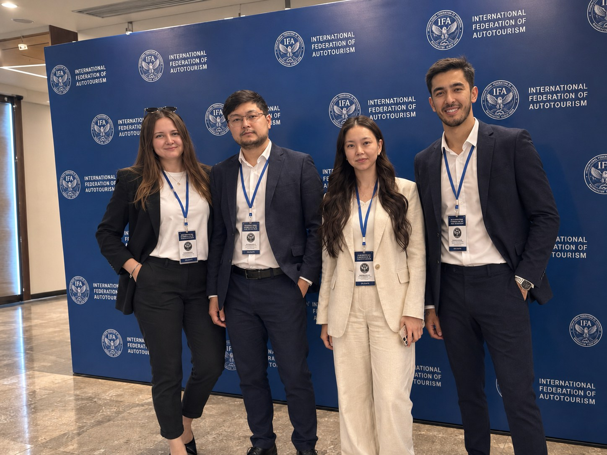
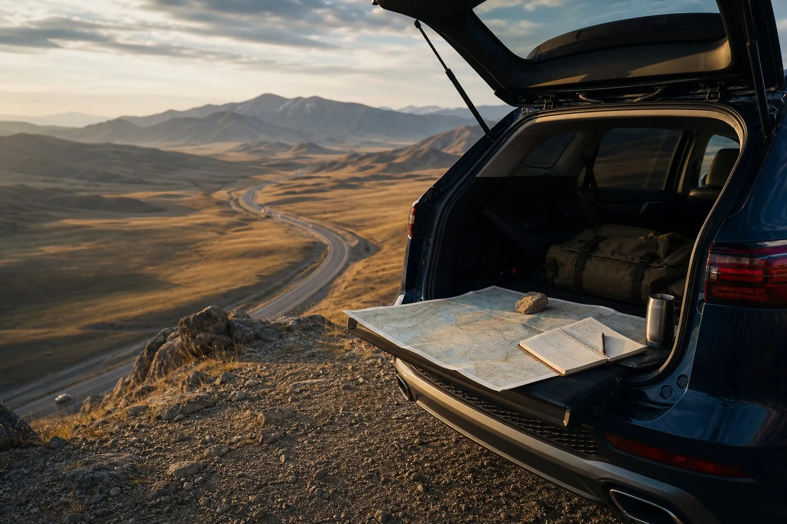
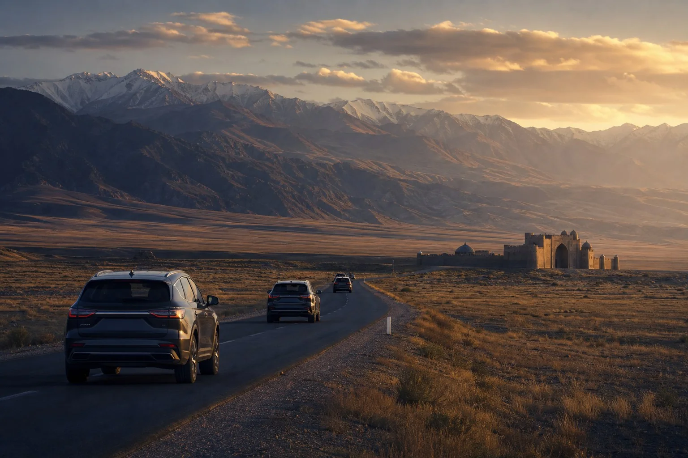

2002Подтверждённая основа
Учреждение фонда
IFA получает правовую и уставную основу для деятельности в сфере автотуризма.
Institutional profile / IFA
IFA — общественный фонд и некоммерческая организация, деятельность которой официально согласована и зарегистрирована Министерством юстиции Республики Казахстан в 2002 году. В соответствии с Уставом Федерация осуществляет деятельность в сфере развития автотуризма, а также оформления и выдачи международных водительских удостоверений.

Verified chronology
IFA получает правовую и уставную основу для деятельности в сфере автотуризма.

Практическая работа с международными водительскими документами выстраивается через аккредитованного партнёра.

Поддерживается документальная и информационная работа для водителей через партнёрскую инфраструктуру.

20–27 апреля представители IDA участвовали в экспедиции «Легенды Юга» в рамках сотрудничества с Nomad Explorer. Маршрут прошёл по Жамбылской и Туркестанской областям. Организатором выступила команда Nomad Explorer Маргулана Сейсембаева; в истории IFA эпизод отмечен как опыт партнёрской сети, без заявления организаторской роли.
Публичная информация об экспедиции ↗
Учредители IFA выступали авторами и инициаторами ряда проектов в сфере благоустройства и развития общественных пространств, реализованных совместно с местными исполнительными органами Республики Казахстан. Проекты были направлены на создание комфортной городской среды, модернизацию общественных зон и повышение качества городской инфраструктуры.

Формируются маршрутный портфель, раздел полезных материалов и современная модель сотрудничества.

Подготовка международной маршрутной программы через Казахстан обозначена как будущий этап, а не завершённое достижение.
Current programme

Рабочие концепции по Казахстану и соседним странам проходят кабинетную проработку и требуют полевой проверки.
Открыть маршруты →Чек-листы по документам, МВУ, готовности автомобиля, границам и оценке международного маршрута.
Открыть материалы →
Шёлковый путь сохраняется как планируемая программа; параметры будут определяться после проверки маршрута и партнёрской инфраструктуры.
Открыть проектную логику →Cooperation & development